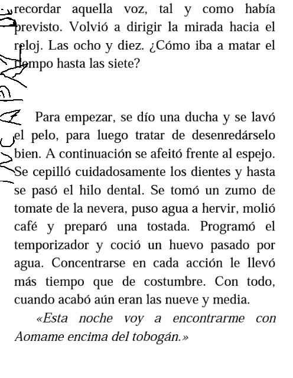

Autor : Haruki Murakami
Página : 88
Fecha : 14/01/2012
Resaltado : A lo mejor, a cambio de haber dejado el rastro de su paso por allí, la chica se había llevado un pedazo del alma de Ushikawa. Éste podía sentir en lo más hondo de su pecho ese nuevo vacío.
Página : 124
Fecha : 16/01/2012
Resaltado : en el rabillo del ojo se le formaron unas pequeñas arrugas. Esas sutiles, fascinantes e intelectuales amigas que sólo tienen las mujeres cultivadas de mediana edad
Página : 130
Fecha : 16/01/2012
Resaltado : cuando lo confeccionaron seguro que ya estaba pasado de moda
Página : 169
Fecha : 17/01/2012
Resaltado : Esa satisfacción que se deriva de saber que, inevitablemente, uno forma parte del mundo
Página : 174
Fecha : 19/01/2012
Resaltado : Apagados sus anhelos, olvidadas sus ambiciones y embotada su sensibilidad, la resignación y la impasibilidad se habían instalado en el vacío restante.
Página : 214
Fecha : 20/01/2012
Resaltado : Puede que quienes estuvieran al otro lado lo necesitaran a él, pero él no los necesitaba a ellos
Página : 329
Fecha : 24/01/2012
Resaltado : No es fácil sobrevivir cuando uno es un paria y depende sólo de sus propias fuerzas.
